On-site · On-site
On-site inspection scenarios
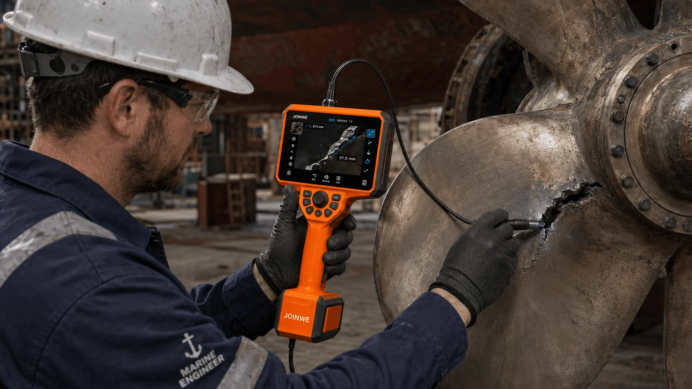
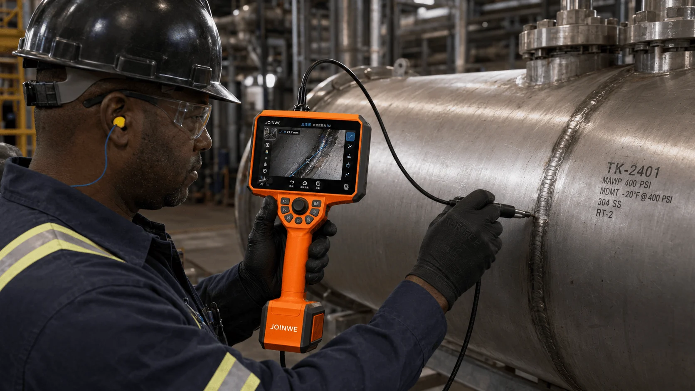

Real-time collection, 3D reconstruction and precision measurement software for narrow plumbing and equipment cavity detection. In a field-light environment, readability is balanced with single-hand operation efficiency.
The software and hardware interface of the industrial endoscope detection system. Real-time image acquisition, 3D reconstruction and precision measurement tools designed for narrow piping and equipment cavity detection - support 2D/3D view switching, point-to-point/area/section/ angle multi-modular measurements, deep pseudo-colour maps and PLY dot clouds, balancing readability and operational efficiency in high-light environments on the ground.
A consistent and interactive paradigm runs through the process, from observation, measurement to records management.
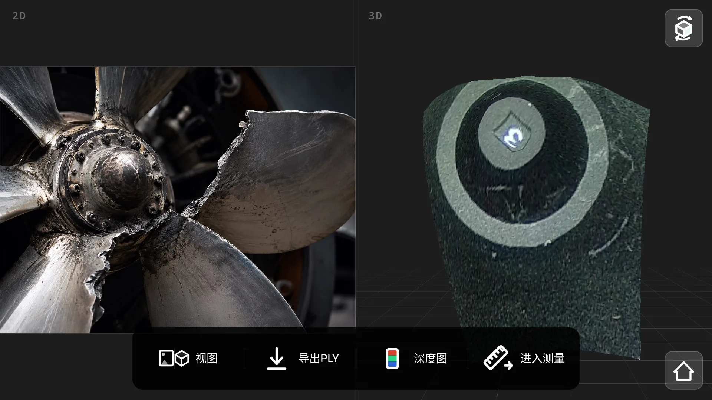
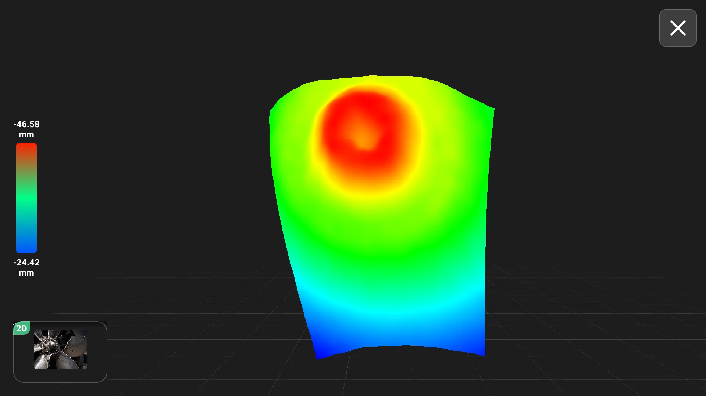
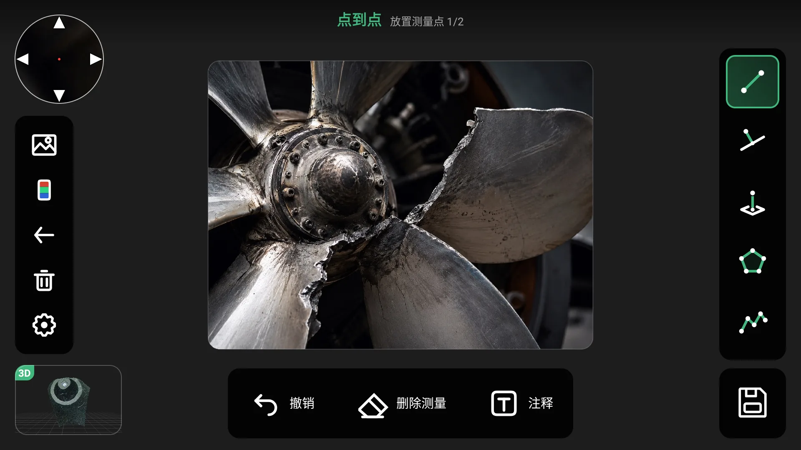
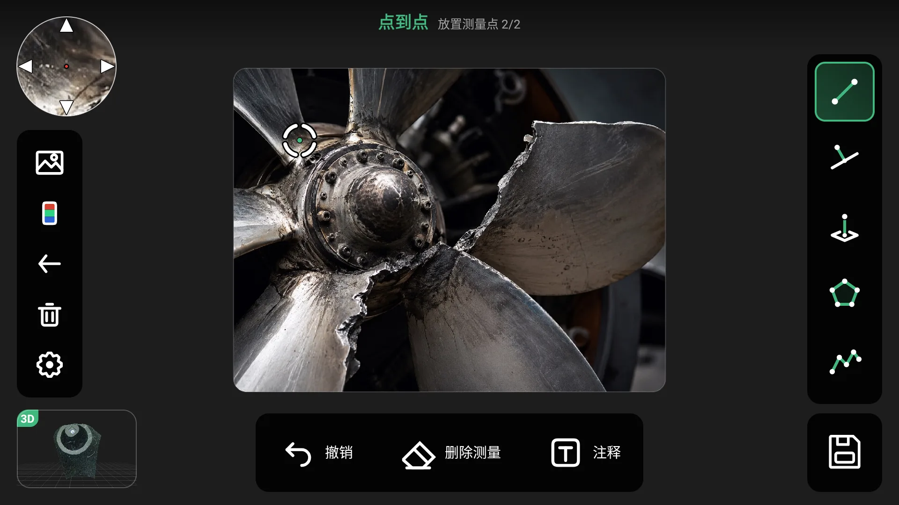
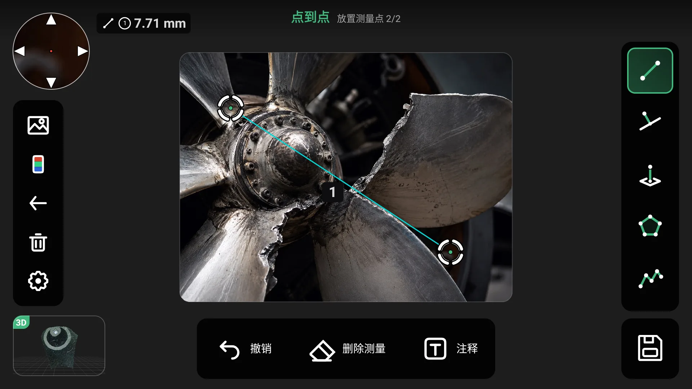
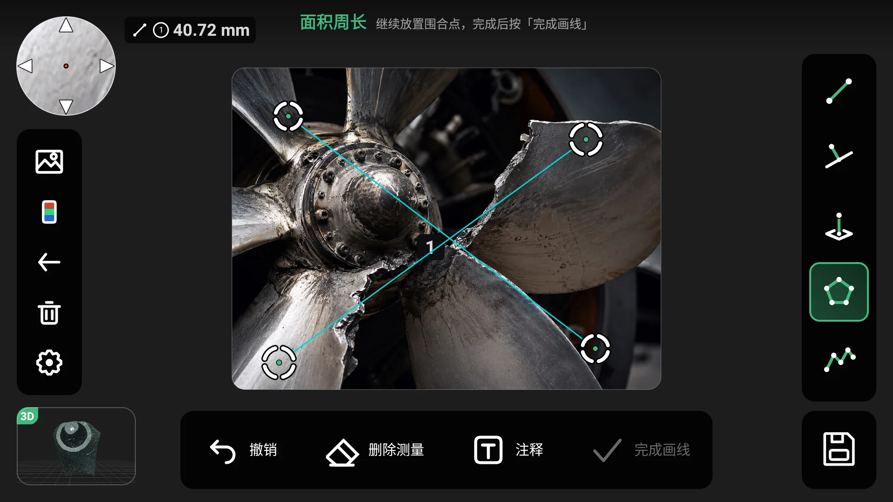
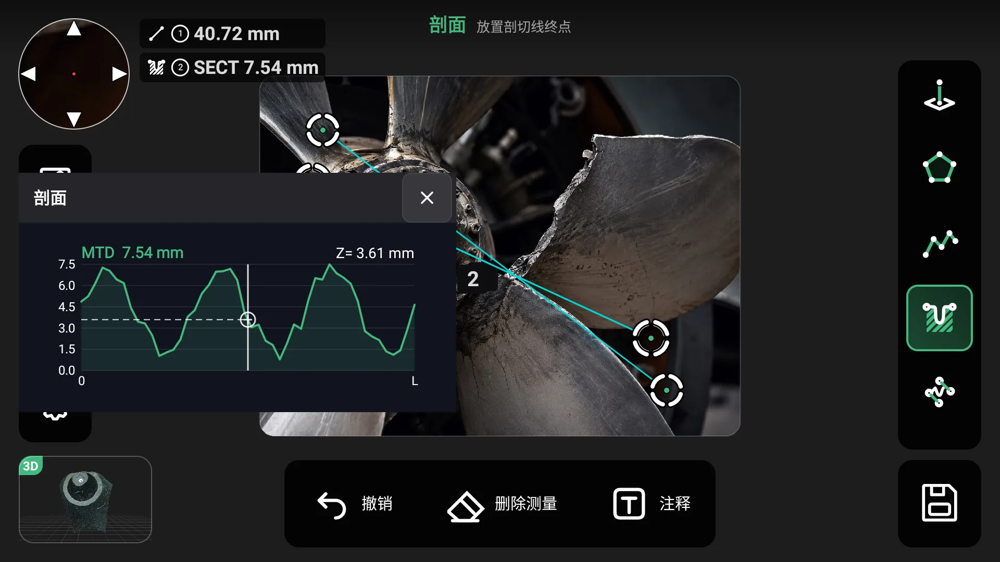
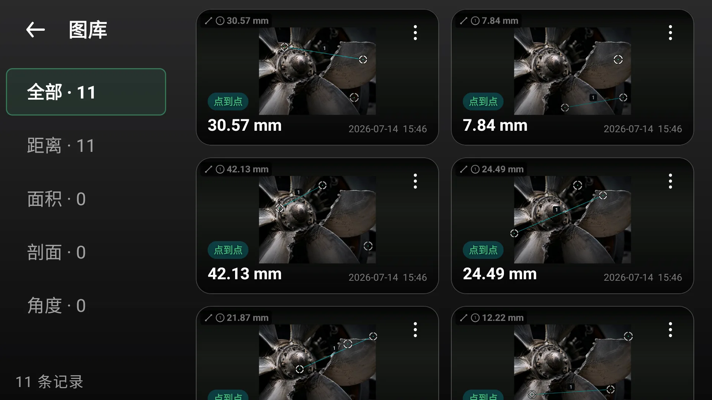
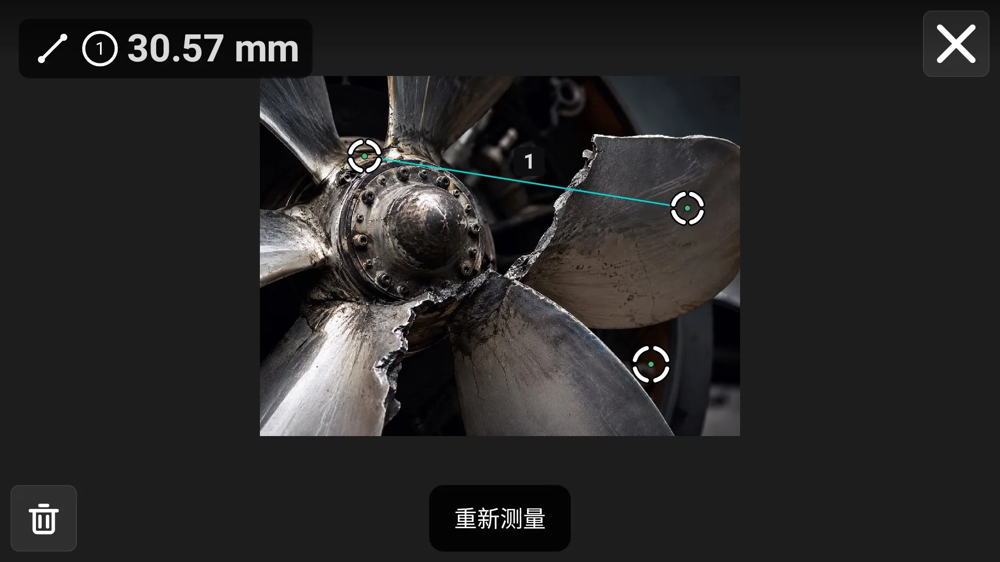
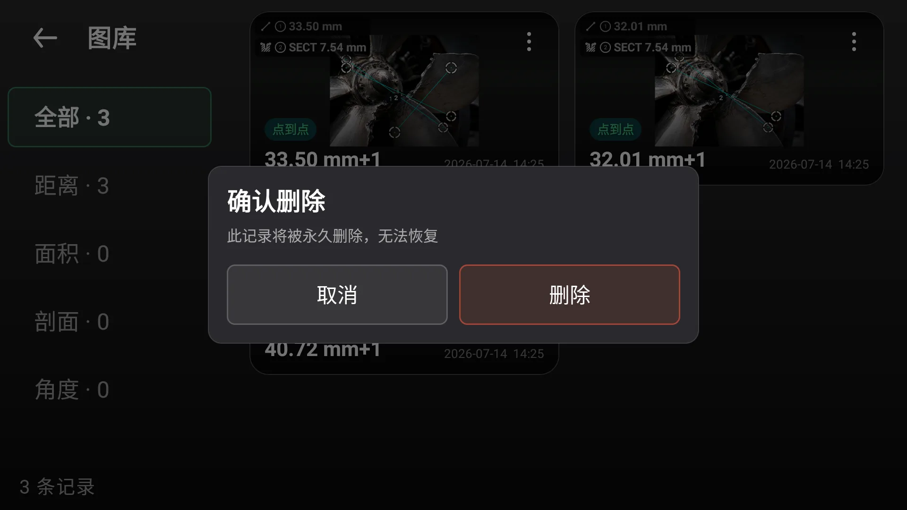
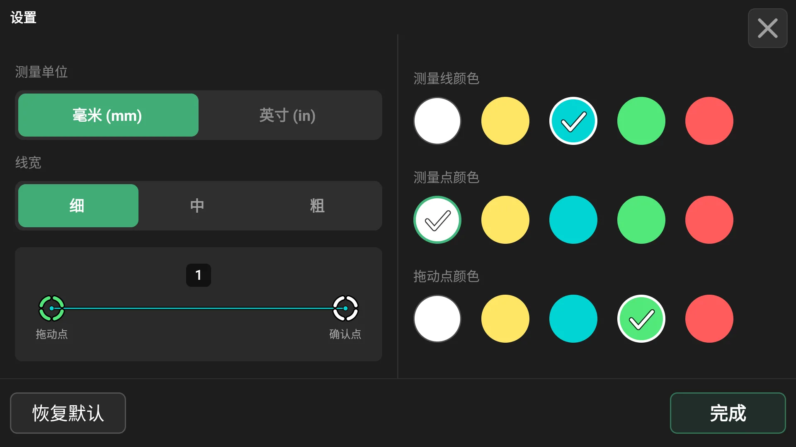
Tests are often conducted in high-light, reflective environments, with a dark interface + high-comparison emphasis on colour, ensuring that readings, guides and controls remain clear in sunlight.
Most of the equipment is held on one hand, the interface is aligned with the hardware buttons at the end of the device, and critical operations are within reach, reducing error on the site.
The point-to-point, area, profile, angle, depth, etc., are the same "take-to-valid-read" paradigm, which reduces learning costs and improves field efficiency.
The same goal is transposed between the scenes, three-dimensional reconstruction, and the poignant in depth to help engineers quickly locate and determine the location and depth of the defects.
From the bilge of the wing complex structure and the fuselage, to the core cavity of the turbo blades of the aviation engine and to the bolts of the hard-walled bolt, every key component must bear an extreme high-speed, high-temperature, and high-voltage interlocking load. Even the smallest cracks and corrosives, if not detected, will turn into catastrophic flight safety hazards and millions of expensive downages.
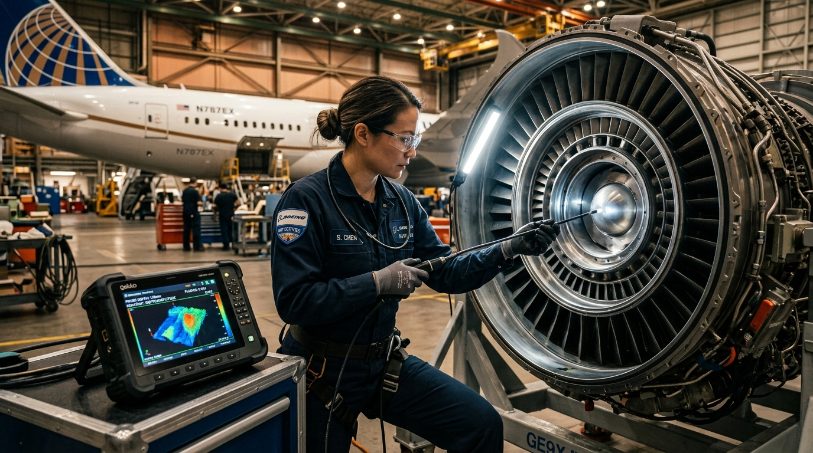
In the hangar site, engineers are able to access the core of complex aviation engines with ultra-skinned fibre-optic probes. The system provides a millisecond-level, bi-eye metalloid matching and three-dimensional depth reconstruction, tackles the extreme optical environment where metal reflectors and dark light are interwoven, and captures, in real time, blade microfissions, external damage (FOD) and calibration pits.
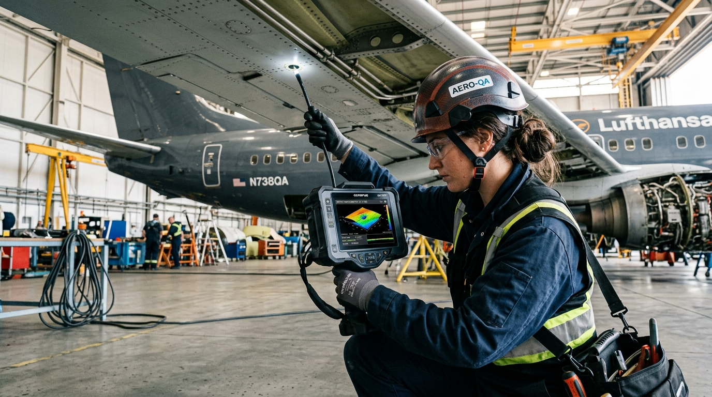
Quantification assessment reports are produced for flight crews by point-to-point precision ranging and MTD profile depth algorithms for stress cracks on the edges of the plane's wing, pelvis of the pelvis of the pelvis of the composite material (Delamination) and the Fastner Holes.
In the face of the increasing complexity of complex materials and stringent quality controls on modern aircraft, we have been able to provide system-level answers, from human efficiency, bottom algorithms to data architecture.
VeinScope provides a three-dimensional geometry resolution of 0.01 mm space and a subpixel magnifier point to protect against microduration.
Air engine bends, gear case dead angles are difficult to detect. The full electric four-way bending probes match the 2D scene with the 3D dots of clouds, allowing engineers to see the deep structure.
Two-dimensional images of the plane do not detect dimples or condensed. Deep, pseudo-hot, attempts to transform the three-dimensional data into a visual motif, red near the blue and condensed milliseconds.
The operating habits of different groups and stations vary significantly. The consistency of the "observation-take point-confirmation-reading" motion lines and standardized key-button maps are used to avoid errors and errors.
Flight safety depends on a tight desk account. Measurement labels are stored locally and encrypted with original images, PLY point cloud models, a key export of traceable detection records, and 100 per cent data privatization sovereignty.
The tarmac is tanned with oil-resistant gloves. High-matched dark-colour systems are aligned to the key points of the body physics hardware, with one hand to hold blind, and no cumbersome layers to block.

